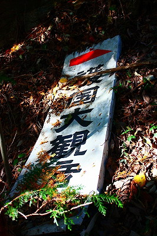

大淵寺護国観音/埼玉県
秩父三十四ヶ所霊場の２７番札所大淵寺。
ここに私の大好物、戦前に作られたコンクリ観音像がある。
山門から見上げると遥か上に件の観音サマが待ち構えている。
「お前、大仏好きなんだってな！来いよ！」と言っているような、いないような。
門前の地蔵堂になぜか大量のさるぼぼがぶら下がってた。
位置関係はこんな感じ。ただしかなりデフォルメ効いてます。
実はこの日、ここに来るまでに幾度となく山道を登ったり降りたりしていたので、膝が壊滅寸前。
でもここまで来たら行くしかないでしょ。
まずは観音堂にご挨拶。脇に素敵なイラストが掲げてあった。
これは秩父霊験記という秩父の各札所を紹介している錦絵の一部を模写した看板で、オリジナルの絵師は歌川国貞。ちなみに秩父霊験記ではこの国貞の絵の上に境内の様子を描いた風景画もあるのだが、そちらは二代目歌川広重が担当している。両者とも派手な絵ではないが過不足ない手堅い画風である。
さて。
いくら話を逸らしても観音サマは近づいて来てくれないね。登りますか。
見た目よりもキツめの道を登る。途中、看板が倒壊しててこっちの心も膝も倒壊しそうになるが、大好きな戦前大仏を間近に見るまでは、欲しがりません勝つまでは、の心意気で頑張りましたよ。俺。

歩くこと数十分。ようやく観音像の足元にたどり着く。ひー。
ってチビッ子とか楽勝で登って来てるじゃん。
しかも勢い余って台座とかに登ってるじゃん。
この観音像、護国観音といい、完成は昭和１０年。
護国観音という名称は戦前大仏においてはポピュラーなネーミングだ。
長野の平和観音の初代や大船観音の戦前バージョンなどなど…
まあ、そういう御時勢だったし、そもそも大仏というもの自体が建立にあたって行政から建設及び勧進の許可を得るために趣意書を作成するのだが、その際誰もが納得できる大義名分を掲げなければならなかったのだ。
大抵が護国か皇室ナントカ記念だった。
高さは16.5ｍ。関東三大観音だとか。あと2つは高崎観音、大船観音、と言った辺りだろうか。
端正な顔つき、装飾や衣の処理も戦前コンクリ仏とは思えないほど細かい。
戦前のコンクリ大仏建立ブームも昭和10年頃になるとかなりこなれてきた感がある。もっとも日中戦争に突入する辺りでコンクリ大仏ブームはぷっつりと途絶えるんだけどね。
ちなみにこの大観音の1ｋｍと離れていない場所でも石灰石の採掘が行われている。
足元で騒いでたガキンチョもママに怒られて撤収。
でも判ります。その気持ち。
やっぱ大仏とか見たらとりあえず気持ち揚がっちゃうでしょ。んで、とりあえず登れるトコまで登っちゃうでしょ。
で、気が付いたら大仏の手のひらとかに登っちゃって降りられなくなって泣いちゃうでしょ。
よし！それでこそコドモだ！でかいモノ見たら理屈抜きに登るんだよ。コドモは。
…と言う訳でやっとガキンチョ共が降りたので今度は俺様が登るのだ…
台座に登って観音サマに肉薄する。
背後には３つ穴が開いている。
メンテ用なのか換気用なのか、上２つには蝶番の跡があるので、元々は扉が付いていたのだろう。
中は見えないのでカメラを突っ込んで適当に撮ってみた。
観音像の中央には真柱があり、その周囲を鉄骨、しかも鉄道のレールで補強してある。
特に胎内空間を意識したつくりではないようだが、真柱の上部には意味ありげな雲型の装飾の痕跡があった。
後から来た別のガキンチョが登りたさそうにしていたので、代わってあげたぞ。順番コだからね。
そもそも常識ある大人は台座とか登るのか？カメラとかガンガン石にぶつけてさー、などという御意見、御感想は一切受け付けません。確かにレンズが少し歪んじゃったけど、いいんです、そんなこと。
護国観音の台座には観音サマの線画と供え物が。
護国観音にマッコリですか…。
足元にあった１０円玉と比較していただきたい。やっぱでかいです。
台座と衣の間にはわずかだが隙間が開いている。
この観音像は衣自体が構造壁となっていて先ほど見た胎内の心柱と共にこの観音像を支えているのだが、その縁を少し離すことで衣が少しだけ捲れている風味が出ている。これだけでも衣の柔らかさが表現出来るわけです。大きい割には芸が細かい！
セメント帝国秩父の威信をかけて作った力作だ。
ところで。
観音像の近くに建立の記念碑が建っていた。
見てみると…
「仏師 志佐日精 助師 福崎秀雲」とある。
これをどう読むか。
ここで感の鋭い読者諸氏なら思い浮かぶ名前がある。
そう、本邦の影の大仏フィクサー、福崎日精。
戦後、日本のあちこちに大仏を建てた人物である。
当サイトで紹介しただけでも
身代わり観音 佐賀県 昭和２８年
江東寺 涅槃像 長崎県 昭和３２年
弘願寺 弘法大師像 昭和４４年
と戦後に活躍した仏師である。その他あちこちで活躍しているのだが、詳しいことはその内、まとめて報告する予定。
これは私見だが、昭和１０年当時、まだキャリアが浅かった福崎秀雲なる人物が師匠である志佐日精の名前を襲名して福崎日精と名乗ったのではなかろうか。
とすれば例えば佐賀の身代わり観音などの巨大観音の義兄弟ということになる。
さて、検証してみようか。

↑佐賀の身代わり観音
う〜ん。上手く言い表せないが、この舞ノ海っぽい感じ。顎肉とか目線とか凄く似てますね。
断言は出来ないが、かなり良く似ているのは確か。
こりゃ今後の宿題だな。
見下ろせば先ほどの山門ははるか下。その向こうには秩父鉄道が走っている。
はあ〜、今度は降りるのか〜。
2009.11.
珍寺大道場 HOME